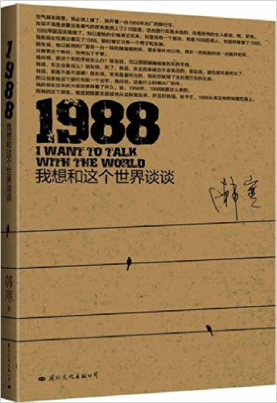

身边人一直有推荐韩寒的作品的，最初是“不屑于”读这些流行作家的作品，直到看到他的一部《1988——我想和这个世界谈谈》，之前没有读过他的作品，所以很多人说它是韩寒写过的最好的作品，这点我不敢苟同。但只对于这本书而言，作品风格趋于成熟，但是内容不是那么丰满，不过这也正符合韩寒意见领袖的特点，传达出的是意不是形，看他的作品就如欣赏国画或书法一样，关键部分浓墨渲染，次要部位一笔带过。说实话在我心中韩寒一直是青春作家的形象，觉得在他身上不会有如此稳重而又深刻现实讽刺意味的感觉，但是这部作品改变了我的看法。
这部小说个人觉得比较写实，有猥琐的诙谐却也富有讽刺色彩，现实主义讽刺小说还是比较难写的，把握不好容易“暴露”或偏离，这本小说以主人公的一次汽车旅途为主线，同时也是开辟了公路小说，这不禁让我想起了他的一部电影《后会无期》，同样是公路小说不过是以表白和入职为主线。这本小说我觉得有三个方面的亮点：怀旧，妓女，梦想与现实。
人物分析：
1988：主人公路子野的一辆翻新的出过事故的旅行车。
路子野：小说的主人公，1988的主人。他是一个迷茫，自闭又自我矛盾的人，一直在寻找着什么，同时也在逃避着什么。对初恋，他寻找了6年，找到后却选择了离开；对孟孟，他一开始紧锁内心，等到慢慢打开心扉的时候，却遭遇变故，还是选择了离开；子野开着1988踏上旅途，与其说是寻找1988的 制造者，不如说是在逃避。他从一个城市逃到另一座城市，像韩寒其他小说中的主人公一样，漫无目的、不知道方向在哪里。他不只是在逃避熟人和回忆，更是在逃避自己的过去和无法承受的现实。他觉得换了一座城市后，自己就可以重新开始。他是个矛盾的人，一直在逃避，却又一直生活在过去和朋友们的影响里。他是一个脆弱的人，准确的说更像一个极其脆弱玻璃心的小男孩，当你拿走或者弄坏了他的玩具，他就会不声响的或者委婉的离开你，开始他的“清零”生活。
娜娜：子野半途中邂逅的一个妓女。相貌普通，没文化也没手艺（除了XXOO），心地善良、思想简单。虽然身份卑微低贱，但是不惧残酷现实，对生活一直充 满着希望，虽然梦想只是做桑拿房的妓女。遭遇过无数次的欺骗，但她仍有坚持梦想和希望的勇气，这是对梦想的追求与现实的抗争。从子野称她为“圣母玛利亚”可以看出，这个人物才是全书韩寒不吝笔墨重点赞美的对象。 娜娜最大的愿望就是能在这个世界留下些什么，最终她也是这部小说中最大的赢家。她在小说中一直陪伴着子野，直到旅途的终点。虽然她最后也倒在了现实面前， 但是却和别人不太一样，因为她留住了象征着希望和美好的孩子。娜娜最终是死是活，小说并没有交代，但我认为娜娜是死亡的。根据她职业工作的性质，她得的病应该就是艾滋。而且，只有娜娜的死亡才可以解释孩子的出生，因为完美无缺的孩子，正是她的重生。没有死亡，就没有重生。
丁丁哥哥：是韩寒小说中不多见的正面人物之一，主人公陆子野的偶像。有理想、有抱负，聪明仗义，博闻强识，身体健壮，是小朋友们的榜样、大人们称赞的对象。丁丁哥哥整个人对于子野来说是阳光一般的存在，对子野的人生有很大的影响。他想“和这个世界谈谈”，为了自己的理想离开家乡而北上，最后在1988+1那年死了。具体怎么死的，小说中没有交代，这也是开头我说内容不丰满的一部分。但是知道1988+1那年发生了什么事的人，都知道丁丁哥哥是怎么死的，联系丁丁哥哥的为人与人格，以及他的“和这个世界谈谈”，毫无疑问的。
1988制造者：子野的朋友。因袭击化工厂而被逮捕入狱，后来被执行了死刑。子野开着1988便是为了迎接他，但是谁也不会料到他最终会躺在骨灰盒里与大家见面，这点当时我也很惊讶。其详细身份在书中介绍得很少，是小说中最大的谜。
孟孟：小说塑造得比较出彩的一个人物，子野的前女友。本是表演系的学生，梦想成为大明星。后来在一个荒唐的剧组拍摄电视剧时为了成名而接受潜规则，最后梦想破灭、沦为了妓女，后成为全国头牌。是一个为了事业而抛弃一切、最终却被事业所抛弃的悲情人物。在成为全国头牌妓女后选择了失踪，生死未明。至于孟孟最后是否屈服于现实、被生活所重新割塑，我们不得而知。但从她与子野最后的一次对话来看，结局无疑是令人唏嘘的。孟孟的复杂性，同样表现在我们不知道她是否故意利用子 野，借助子野的采访炒红剧组、进而炒红自己，他们之间关乎爱情吗？我认为是没有的。
刘茵茵：陆子野的初恋对象。此处的回忆想必勾起不少人的回忆。一直在等子野，后来虽然被10号 “霸占”，但仍保留着最重要的东西，这证明她其实并不想妥协于现实。但是从她最终和10号一起死于车祸推断，她还是与10号在一起了。她与子野的那个十年之约最终还是没有实现，她终究没能战胜现实。
子野和娜娜，他们有一个共同点，那就是他们都想清零自己、重新开始新的生活，但方式却不尽相同。子野是通过逃避的方式来清零自己，从一座城市逃到另一座城市； 而娜娜认为自己逃避不了过去、自身已经无法再洗净，于是选择以重生的方式来清零自己，并把重生的希望寄托在了自己的孩子身上——这也是她为什么非坚持要这个孩子的原因。她究竟是战胜了现实还是死在梦想的路上，似乎怎么说都不确切，这也正是小说的妙处。但不可否认，娜娜其实是喜欢子野的，这一点在小说中可以看出来。娜娜只有在遇到不用套和喜欢的顾客时才会在其洗澡的时候记住他们的电话号码，而小说交代陆子野在与娜娜 交易时要的是“全套服务”，但娜娜却存有子野的电话号码。从后文中娜娜与子野的对话和情态等细节也都可以看出她对子野的特殊感情，例如她说到子野和丁丁他们的不同，如果和她结婚啦就一样啦。。。。个人感觉娜娜对子野的喜欢就像她对自己孩子的喜欢一样。这种感情并不仅仅是母爱，更是一种欣赏，甚至是羡慕。因为陆子野可以不断地清零自己，洗净身上的肮脏和心中的阴影，让自己 像婴儿一样干净，但娜娜却不能，她认为妓女的罪恶与肮脏是无法洗去的，所以只能把重生的干净的另一个自己——孩子交给子野。子野是娜娜的理想状态，与其说娜娜喜欢和羡慕子野，不如说她是憧憬理想中的自己。子野其实是舍不得娜娜的他一次次的担心娜娜会走，中间的离开也是放不下她，娜娜也舍不得子野，虽然她嘴上很硬。娜娜最终选择离开子野，是因为她自己只是一个妓女，感觉自己配不上子野。娜娜把自己刚生下来的孩子送给子野，正是要让孩子替自己陪伴子野，延续自己扮演不了的角色、完成自己未完成的梦想——因为孩子就是“洗净”、重生后的娜娜。
10号和丁丁哥哥似乎在为子野探索着路，用自己的死来证明他应该怎样做，似乎在告诉子野，“嘿，小子，你可别像我这样“，他们从另一个角度映射了子野，同时也是序中说的”倒在路上的朋友“，在梦想的路上死亡，探索，而子野的路在前方，不过不再有他们的陪伴。
小说很大篇幅在回忆过去，可以看出韩寒是怀旧的，童年的弹子、童趣的人物扮演，年幼无知的故事，以及后来的乐队，还有暗恋的女生。。。。。无不勾起读者自身的回忆。小说以妓女为女一号，可见通过小人物甚至于常人看来不屑于的卑贱的人，展开了故事，通过小人物传达大道理与世界观，极富有讽刺色彩。小说里充斥着晦涩难懂的隐喻，而紧随隐喻而来的就是讽刺和批判——这才是韩寒小说中最有价值的地方。细细数来，书中的隐喻可以说是不计其数：肖华哥哥被抓、丁丁哥哥的死、1988机油尺、1988制造者袭击化工厂、临时工哥哥念宪法、10号由义士变恶霸，而贪污腐败的领导、泯灭人性的教育、拜金主义、盲目的领袖崇拜、欺诈病人的医院、弄虚作假的警察…等等无一不是对这个荒谬世界的讥讽。其中令人印象最深的无疑是“流沙”和“温水煮青蛙”这两个寓言。前者讽刺与抨击了愚民教育对人的洗脑和误导，后者则告诉了我们什么才是真正的现实。真正的温水青蛙是青蛙出不来还是是沸水煮。
最后以小说中的话来结尾，”纪念我每一个倒在路上的朋友。献给你，我生命里的女孩们，无论你解不解我的风情，无论我解不解你的衣扣，在此刻，我是如此地想念你，不带们“。